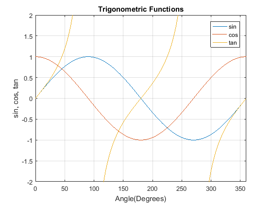

% Filename: Tutorial_02_3 % Author: Afeique Sheikh % Program description: % Purpose of this program is to demonstrate basic matrix operations, % creation of tabular results, plotting, and the use of the diary command % to write the contents of the command window to a file. % clear command window and all variables clc % clears contents of the command window clear % clears all defined variables from the workspace format compact % removes blank spaces in the output % remove the word 'compact' to restore default spacing % the diary command appends all output sent to the command window to the % file Tutorial_02_3_Output.txt % "append" means it will add onto the file without emptying it: % the file's previous contents will be preserved. diary DavidWest % output title and author to command window fprintf('Output for Tutorial_02_3 written by Afeique Sheikh.\n\n') fprintf('Output is also sent to a file: "Tutorial_02_3_Output.txt"\n') % a matrix is a mathematical table of values containing rows and columns % matrices also have mathematical operations and strict mathematical % properties defining their behaviour MatrixA = [1 2 3 4; 5 6 7 8; 9 10 11 12] % individual matrix elements can be accessed using parentheses (row, col) fprintf('MatrixA(2,3) = %i\n\n', MatrixA(2,3)) % elements of an entire row can be output using the colon operator fprintf('Third row of MatrixA = %i %i %i %i\n\n', MatrixA(3,:)) % elements of an entire column can also be output using the colon operator fprintf('Second column of MatrixA = \n\n%i \n%i \n%i\n\n', MatrixA(:,2)) % specialized matrices can be created with the ones, zeros, and eye % functions MatrixB = ones(2,3) % matrix with 2 rows, 3 columns filled with ones MatrixC = ones(4) % matrix with 4 rows, 4 columns filled with ones MatrixD = zeros(3,2) % matrix with 3 rows, 2 columns filled with zeros IdentityMatrixE = eye(3) % creates a 3x3 identity matrix % by definition, identity matrices are square MatrixE = [1 1 1; 2 2 2; 3 3 3] % when a matrix is multiplied by an identity matrix, the result is % the same matrix MatrixE_X_IdentityMatrixE = MatrixE * IdentityMatrixE % a matrix can be used to display a table of values angles = [0:30:360]; % semicolon suppresses output % table contains a 4 column trig table table = [angles' sind(angles)' cosd(angles)' tand(angles)']; % the disp() function is an alternative to fprintf() % it implicitly appends a \n newline character at the end of the string disp('Trig Table') % prints a heading disp(' ') % prints a blank line % outputs the table headings, adjust spacing here to align headings with % values disp(' Angle(Deg) Sine Cosine Tangent') disp(table) % outputs the values % plotting the results clear angles % clears variable angles angles = [0:1:360]; % redefines with a smaller increment for plotting plot(angles, sind(angles), angles, cosd(angles), angles, tand(angles)) % Adds title, axis labels, and gridlines title('Trigonometric Functions') xlabel('Angle(Degrees)') ylabel('sin, cos, tan') grid on axis([0, 360, -2, 2]) % sets the xmin, xmax, ymin, ymax of a plot legend('sin', 'cos', 'tan') % adds a legend to define each data set diary off % turns off the diary command
Output for Tutorial_02_3 written by Afeique Sheikh.
Output is also sent to a file: "Tutorial_02_3_Output.txt"
MatrixA =
1 2 3 4
5 6 7 8
9 10 11 12
MatrixA(2,3) = 7
Third row of MatrixA = 9 10 11 12
Second column of MatrixA =
2
6
10
MatrixB =
1 1 1
1 1 1
MatrixC =
1 1 1 1
1 1 1 1
1 1 1 1
1 1 1 1
MatrixD =
0 0
0 0
0 0
IdentityMatrixE =
1 0 0
0 1 0
0 0 1
MatrixE =
1 1 1
2 2 2
3 3 3
MatrixE_X_IdentityMatrixE =
1 1 1
2 2 2
3 3 3
Trig Table
Angle(Deg) Sine Cosine Tangent
0 0 1.0000 0
30.0000 0.5000 0.8660 0.5774
60.0000 0.8660 0.5000 1.7321
90.0000 1.0000 0 Inf
120.0000 0.8660 -0.5000 -1.7321
150.0000 0.5000 -0.8660 -0.5774
180.0000 0 -1.0000 0
210.0000 -0.5000 -0.8660 0.5774
240.0000 -0.8660 -0.5000 1.7321
270.0000 -1.0000 0 -Inf
300.0000 -0.8660 0.5000 -1.7321
330.0000 -0.5000 0.8660 -0.5774
360.0000 0 1.0000 0
